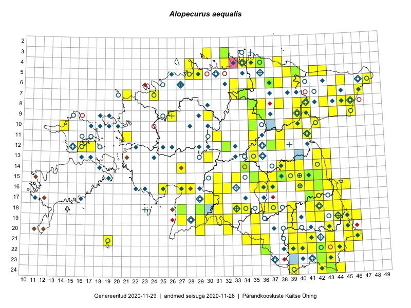

Alopecurus aequalis
Uuendatud: 2016-12-08
Kaardile koondatud taksonid: Alopecurus aequalis Sobol.

Kaart põhineb 127 kirjel, neist vaatlusi 121 ja eksemplare 6. Taksonit on leitud 103 ruudust.
| Ruut | Vaatleja(d) | Vaatlusaeg | Kirje tüüp | Viide andmebaasikirjele |
|---|---|---|---|---|
| 16-40 | Thea Kull | 2015-07-07 | ruut/ala | vaata PlutoFis |
| 03-30 | Ott Luuk, Peedu Saar | 2015-09-03 | ruut/ala | vaata PlutoFis |
| 14-42 | Peedu Saar, Ott Luuk | 2015-06-21 | ruut/ala | vaata PlutoFis |
| 11-35 | Ott Luuk, Peedu Saar | 2015-07-27 | ruut/ala | vaata PlutoFis |
| 18-45 | Peedu Saar | 2015-07-04 | ruut/ala | vaata PlutoFis |
| 18-44 | Peedu Saar | 2015-07-04 | ruut/ala | vaata PlutoFis |
| 15-39 | Peedu Saar | 2015-07-15 | ruut/ala | vaata PlutoFis |
| 16-41 | Peedu Saar, Eerik Leibak | 2015-07-30 | ruut/ala | vaata PlutoFis |
| 16-45 | Toomas Kukk, Eerik Leibak | 2015-07-29 | ruut/ala | vaata PlutoFis |
| 08-45 | Peedu Saar, Liina Oja | 2015-07-22 | ruut/ala | vaata PlutoFis |
| 16-44 | Toomas Kukk, Eerik Leibak | 2015-07-29 | ruut/ala | vaata PlutoFis |
| 15-31 | Toomas Kukk, Tiit Hallikma | 2015-06-10 | ruut/ala | vaata PlutoFis |
| 16-42 | Thea Kull, Eerik Leibak | 2015-07-05 | ruut/ala | vaata PlutoFis |
| 07-44 | Tiit Hallikma, Toomas Kukk | 2015-07-20 | ruut/ala | vaata PlutoFis |
| 11-38 | Peedu Saar, Eerik Leibak | 2015-08-18 | ruut/ala | vaata PlutoFis |
| 11-41 | Peedu Saar | 2015-08-22 | ruut/ala | vaata PlutoFis |
| 09-44 | Ott Luuk, Hannes Pehlak | 2015-07-24 | ruut/ala | vaata PlutoFis |
| 08-41 | Ott Luuk, Meeli Mesipuu | 2015-07-20 | ruut/ala | vaata PlutoFis |
| 06-48 | Ott Luuk, Hannes Pehlak | 2015-07-21 | ruut/ala | vaata PlutoFis |
| 08-43 | Thea Kull, Eerik Leibak | 2016-07-24 | ruut/ala | vaata PlutoFis |
| 17-41 | Thea Kull, Peedu Saar | 2015-06-19 | ruut/ala | vaata PlutoFis |
| 19-45 | Toomas Kukk, Timo Luhamäe, Kersti Tambets, Sten Mander, Janika Sammasto | 2014-07-29 | ruut/ala | vaata PlutoFis |
| 14-43 | Thea Kull, Eerik Leibak | 2015-07-06 | ruut/ala | vaata PlutoFis |
| 15-43 | Thea Kull, Eerik Leibak | 2015-07-06 | ruut/ala | vaata PlutoFis |
| 05-42 | Thea Kull, Eerik Leibak | 2015-07-22 | ruut/ala | vaata PlutoFis |
| 08-46 | Meeli Mesipuu, Timo Luhamäe | 2015-07-21 | ruut/ala | vaata PlutoFis |
| 08-46 | Thea Kull, Eerik Leibak | 2015-07-23 | ruut/ala | vaata PlutoFis |
| 07-47 | Thea Kull, Eerik Leibak | 2015-07-21 | ruut/ala | vaata PlutoFis |
| 19-45 | Thea Kull, Meeli Mesipuu | 2015-08-19 | ruut/ala | vaata PlutoFis |
| 19-44 | Thea Kull, Meeli Mesipuu | 2015-08-12 | ruut/ala | vaata PlutoFis |
| 16-43 | Thea Kull, Meeli Mesipuu | 2015-08-12 | ruut/ala | vaata PlutoFis |
| 14-38 | Thea Kull | 2015-08-07 | ruut/ala | vaata PlutoFis |
| 18-34 | Maria Abakumova | 2015-07-24 | ruut/ala | vaata PlutoFis |
| 12-38 | Ülle Jõgar, Illi Tarmu, K. Rünk | 2015-07-04 | ruut/ala | vaata PlutoFis |
| 19-32 | Maria Abakumova, Tiit Hallikma | 2015-07-11 | ruut/ala | vaata PlutoFis |
| 10-42 | Kai Rünk, Ülle Jõgar, Illi Tarmu | 2015-07-29T07:00Z | ruut/ala | vaata PlutoFis |
| 17-42 | Kirsi Loide, Marje Loide | 2015-07-27 | ruut/ala | vaata PlutoFis |
| 18-42 | Kirsi Loide, Marje Loide | 2015-07-28 | ruut/ala | vaata PlutoFis |
| 19-42 | Kirsi Loide, Marje Loide | 2015-07-29 | ruut/ala | vaata PlutoFis |
| 16-31 | Mari Metsoja, Jaak-Albert Metsoja | 2015-06-09 | ruut/ala | vaata PlutoFis |
| 12-32 | Meeli Mesipuu, Timo Luhamäe | 2015-06-11 | ruut/ala | vaata PlutoFis |
| 12-32 | Timo Luhamäe, Meeli Mesipuu | 2015-06-11 | punkt | vaata PlutoFis |
| 19-46 | Meeli Mesipuu, Thea Kull | 2015-08-19 | ruut/ala | vaata PlutoFis |
| 13-43 | Meeli Mesipuu, Thea Kull | 2014-08-14 | ruut/ala | vaata PlutoFis |
| 13-42 | Meeli Mesipuu, Thea Kull | 2015-08-14 | ruut/ala | vaata PlutoFis |
| 16-40 | Kadi Palmik, Helle Mäemets | 2015-07-22 | ruut/ala | vaata PlutoFis |
| 06-40 | Mari Metsoja, Jaak-Albert Metsoja | 2015-07-24 | ruut/ala | vaata PlutoFis |
| 18-41 | Kadi Palmik, Helle Mäemets | 2015-08-13 | ruut/ala | vaata PlutoFis |
| 18-36 | Helle Mäemets, Mare Leis | 2015-06-24 | ruut/ala | vaata PlutoFis |
| 16-37 | Helle Mäemets, Mare Leis | 2015-06-22 | ruut/ala | vaata PlutoFis |
| 15-36 | Helle Mäemets, Mare Leis | 2015-07-06 | ruut/ala | vaata PlutoFis |
| 21-45 | Kersti Püssa, Rein Kalamees | 2015-08-05 | ruut/ala | vaata PlutoFis |
| 24-39 | Maret Gerz, Jaak-Albert Metsoja, Ott Luuk, Toomas Kukk, Meeli Mesipuu, Thea Kull | 2014-06-09 | ruut/ala | vaata PlutoFis |
| 11-21 | Hanna-Eliisa Luts, Tõnu Ploompuu | 2015-08-13 | ruut/ala | vaata PlutoFis |
| 09-36 | Jana-Maria Habicht, Ester Valdvee | 2015-08-15 | ruut/ala | vaata PlutoFis |
| 07-34 | Jana-Maria Habicht, Ester Valdvee | 2015-06-27 | ruut/ala | vaata PlutoFis |
| 07-34 | Jana-Maria Habicht, Ester Valdvee | 2015-07-20 | ruut/ala | vaata PlutoFis |
| 08-35 | Jana-Maria Habicht, Ester Valdvee, Kirke Pilvik | 2015-07-14 | ruut/ala | vaata PlutoFis |
| 09-36 | Jana-Maria Habicht, Ester Valdvee | 2015-08-15 | ruut/ala | vaata PlutoFis |
| 24-42 | Rein Kalamees, Eerik Leibak | 2016-06-14 | ruut/ala | vaata PlutoFis |
| 22-43 | Toomas Kukk, Tiit Hallikma, Johannes Kõdar | 2016-06-15 | ruut/ala | vaata PlutoFis |
| 24-44 | Rein Kalamees, Eerik Leibak | 2016-06-15 | ruut/ala | vaata PlutoFis |
| 19-45 | Toomas Kukk, Tiit Hallikma | 2016-06-17 | ruut/ala | vaata PlutoFis |
| 18-45 | Toomas Kukk, Tiit Hallikma | 2016-06-17 | ruut/ala | vaata PlutoFis |
| 21-36 | Silvia Pihu | 2015-06-28 | ruut/ala | vaata PlutoFis |
| 22-36 | Silvia Pihu | 2015-06-28 | punkt | vaata PlutoFis |
| 21-43 | Meeli Mesipuu, Timo Luhamäe | 2016-06-17 | ruut/ala | vaata PlutoFis |
| 19-41 | Vivika Väli, Ülo Väli | 2015-07-15 | ruut/ala | vaata PlutoFis |
| 24-39 | Maret Gerz, Liina Oja | 2016-06-14 | ruut/ala | vaata PlutoFis |
| 18-44 | Maret Gerz, Liina Oja | 2016-06-17 | ruut/ala | vaata PlutoFis |
| 18-43 | Maret Gerz, Liina Oja | 2016-06-17 | ruut/ala | vaata PlutoFis |
| 09-26 | Thea Kull, Oliver Parrest | 2016-07-06 | ruut/ala | vaata PlutoFis |
| 16-25 | Thea Kull, Helle Mäemets | 2016-07-04 | ruut/ala | vaata PlutoFis |
| 21-40 | Tarmo Niitla, Peedu Saar | 2016-06-17 | ruut/ala | vaata PlutoFis |
| 08-40 | Toomas Kukk, Tiit Hallikma | 2016-07-29 | ruut/ala | vaata PlutoFis |
| 20-35 | Thea Kull, Eerik Leibak | 2016-07-18 | ruut/ala | vaata PlutoFis |
| 21-35 | Toomas Kukk, Susanna Vain, Raivo Kalle | 2016-07-18 | ruut/ala | vaata PlutoFis |
| 04-38 | Thea Kull, Susanna Vain, Eerik Leibak | 2016-07-26 | ruut/ala | vaata PlutoFis |
| 08-35 | Sander Laherand, Toomas Kukk, Nele Jõessar | 2016-07-27 | ruut/ala | vaata PlutoFis |
| 10-39 | Ott Luuk, Eerik Leibak | 2016-08-03 | ruut/ala | vaata PlutoFis |
| 10-42 | Ott Luuk, Eerik Leibak | 2016-08-04 | ruut/ala | vaata PlutoFis |
| 09-41 | Ott Luuk, Eerik Leibak | 2016-08-05 | ruut/ala | vaata PlutoFis |
| 18-43 | Thea Kull, Indrek Tammekänd | 2016-07-19 | ruut/ala | vaata PlutoFis |
| 18-33 | Thea Kull, Indrek Tammekänd | 2016-07-19 | ruut/ala | vaata PlutoFis |
| 12-32 | Thea Kull, Raivo Kalle, Susanna Vain | 2016-07-21 | ruut/ala | vaata PlutoFis |
| 12-17 | Thea Kull, Sander Laherand | 2016-08-11 | ruut/ala | vaata PlutoFis |
| 20-29 | Lena Neuenkamp, Jaak-Albert Metsoja, Timo Luhamäe | 2016-07-19 | ruut/ala | vaata PlutoFis |
| 19-29 | Lena Neuenkamp, Jaak-Albert Metsoja, Timo Luhamäe | 2016-07-19 | ruut/ala | vaata PlutoFis |
| 12-16 | Sander Laherand, Thea Kull, Nele Jõessar | 2016-08-11 | ruut/ala | vaata PlutoFis |
| 22-43 | Peedu Saar, Thea Kull | 2016-08-04 | ruut/ala | vaata PlutoFis |
| 22-45 | Peedu Saar, Karin Kikas | 2016-08-18 | ruut/ala | vaata PlutoFis |
| 21-46 | Timo Luhamäe, Meeli Mesipuu | 2016-06-14 | ruut/ala | vaata PlutoFis |
| 09-46 | Meeli Mesipuu, Karin Kikas | 2016-08-31 | ruut/ala | vaata PlutoFis |
| 18-37 | Rein Kalamees, Kersti Püssa | 2016-07-21 | ruut/ala | vaata PlutoFis |
| 04-28 | Sander Laherand, Tõnu Ploompuu, Nele Jõessar | 2016-07-25 | ruut/ala | vaata PlutoFis |
| 21-19 | Meeli Mesipuu, Ott Luuk | 2016-09-10 | ruut/ala | vaata PlutoFis |
| 06-33 | Peedu Saar, Toomas Kukk | 2016-09-14 | ruut/ala | vaata PlutoFis |
| 05-43 | Peedu Saar, Toomas Kukk | 2016-09-13 | ruut/ala | vaata PlutoFis |
| 21-34 | Peedu Saar, Ott Luuk | 2016-09-22 | ruut/ala | vaata PlutoFis |
| 17-42 | Jaak-Albert Metsoja, Mari Metsoja | 2016-06-13 | ruut/ala | vaata PlutoFis |
| 21-35 | Ott Luuk, Peedu Saar | 2016-09-22 | ruut/ala | vaata PlutoFis |
| 17-44 | Peedu Saar | 2016-08-24 | ruut/ala | vaata PlutoFis |
| 13-30 | Tõnu Ploompuu, Hannes Pehlak, Marko Veinbergs | 2016-07-21 | ruut/ala | vaata PlutoFis |
| 04-35 | Tõnu Ploompuu | 2016-07-16 | ruut/ala | vaata PlutoFis |
| 05-40 | Peedu Saar, Sander Laherand | 2016-07-28 | ruut/ala | vaata PlutoFis |
| 11-31 | Peedu Saar, Toivo Sepp | 2016-07-22 | ruut/ala | vaata PlutoFis |
| 09-30 | Ott Luuk, Peedu Saar | 2016-09-06 | ruut/ala | vaata PlutoFis |
| 19-30 | Peedu Saar, Ott Luuk | 2016-10-06 | ruut/ala | vaata PlutoFis |
| 19-31 | Meeli Mesipuu, Mari Metsoja | 2016-07-19 | ruut/ala | vaata PlutoFis |
| 05-39 | Ott Luuk, Tiit Hallikma | 2016-07-28 | ruut/ala | vaata PlutoFis |
| 12-35 | Ott Luuk, Hannes Pehlak | 2016-07-22 | ruut/ala | vaata PlutoFis |
| 13-35 | Ott Luuk, Hannes Pehlak | 2016-07-22 | ruut/ala | vaata PlutoFis |
| 19-27 | Ott Luuk, Hannes Pehlak | 2016-07-18 | ruut/ala | vaata PlutoFis |
| 16-32 | Elle Rajandu, Indrek Tammekänd | 2016-07-20 | ruut/ala | vaata PlutoFis |
| 10-41 | Ott Luuk, Eerik Leibak | 2016-08-04 | punkt | vaata PlutoFis |
| 06-38 | Hannes Pehlak, Thea Kull | 2016-07-25 | ruut/ala | vaata PlutoFis |
| 04-34 | Hannes Pehlak, Toomas Kukk | 2016-07-26 | ruut/ala | vaata PlutoFis |
| 20-32 | Jaak-Albert Metsoja, Mari Metsoja, Lena Neuenkamp | 2016-07-18 | ruut/ala | vaata PlutoFis |
| 19-32 | Jaak-Albert Metsoja, Mari Metsoja, Lena Neuenkamp | 2016-07-18 | ruut/ala | vaata PlutoFis |
| 16-35 | Jaak-Albert Metsoja, Lena Neuenkamp, Sirje Azarov | 2016-07-20 | ruut/ala | vaata PlutoFis |
| 15-33 | Jaak-Albert Metsoja, Mari Metsoja | 2016-07-22 | ruut/ala | vaata PlutoFis |
| 17-41 | Peedu Saar, Thea Kull | 2015-06-19 | eksemplar | vaata PlutoFis |
| 07-34 | Jana-Maria Habicht | 2015-06-27 | eksemplar | vaata PlutoFis |
| 08-35 | Jana-Maria Habicht | 2015-07-15 | eksemplar | vaata PlutoFis |
| 08-35 | Jana-Maria Habicht | 2015-07-15 | eksemplar | vaata PlutoFis |
| 07-34 | Jana-Maria Habicht | 2015-07-20 | eksemplar | vaata PlutoFis |
| 09-36 | Jana-Maria Habicht | 2015-08-15 | eksemplar | vaata PlutoFis |